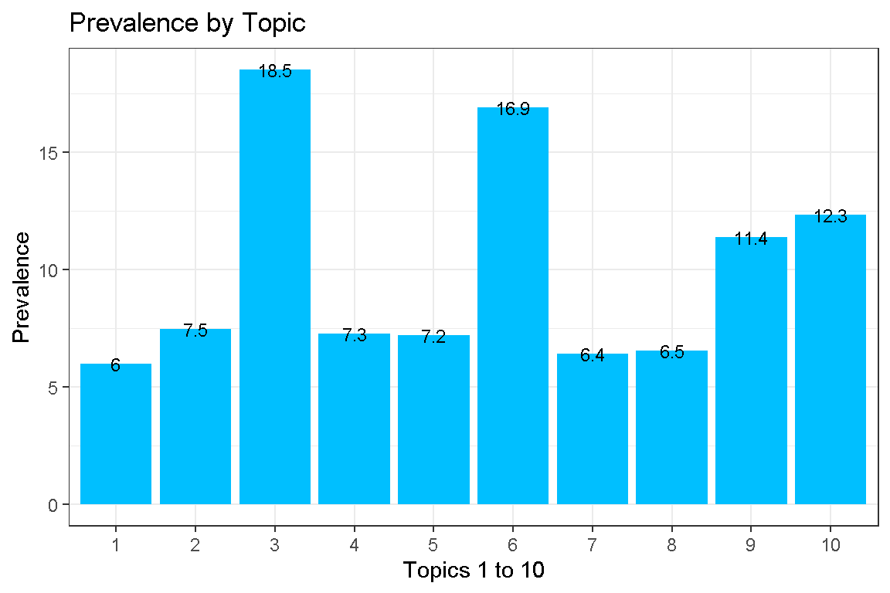
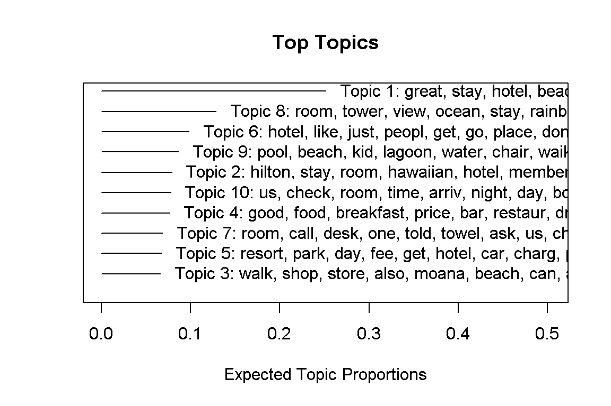
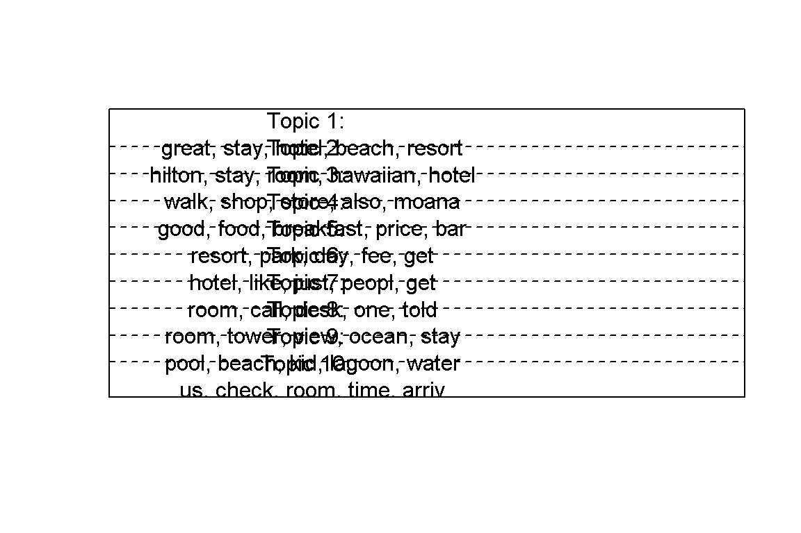
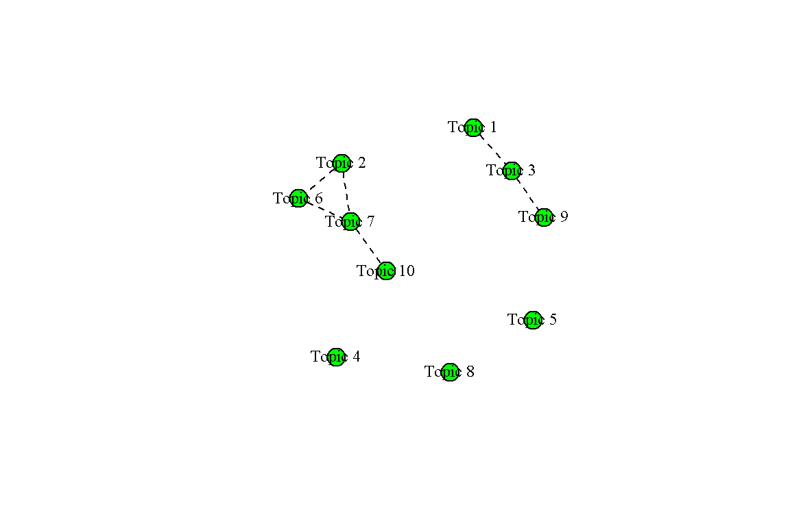
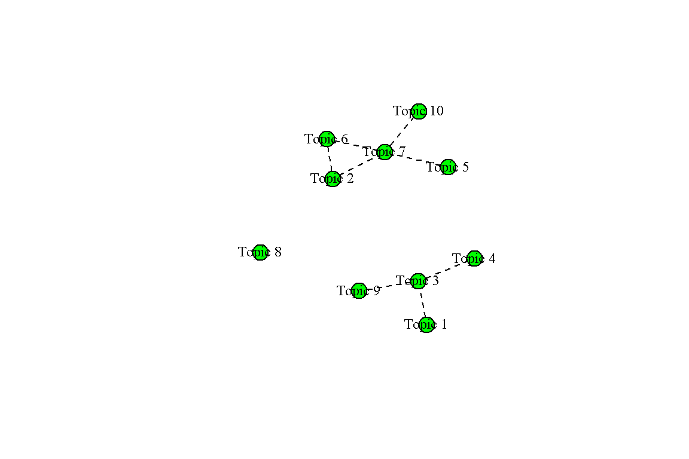
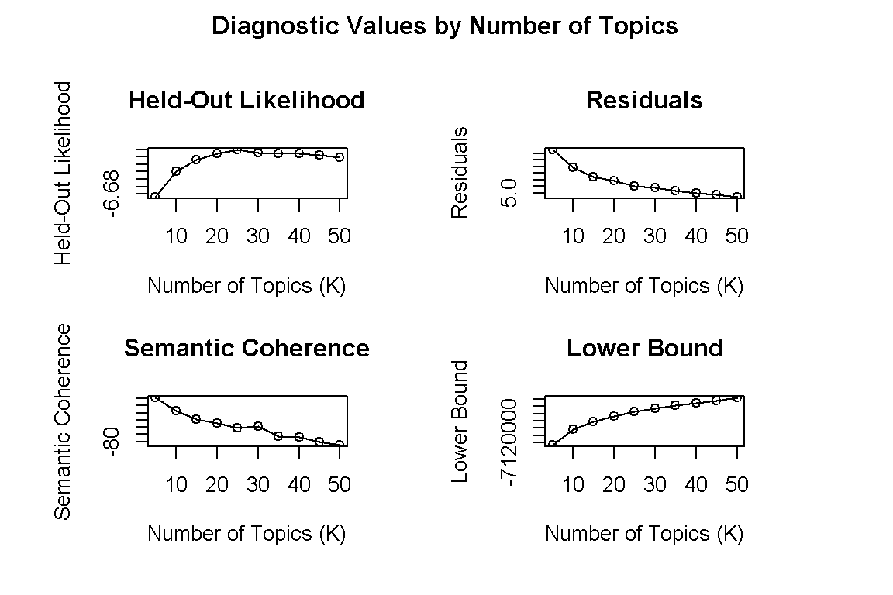
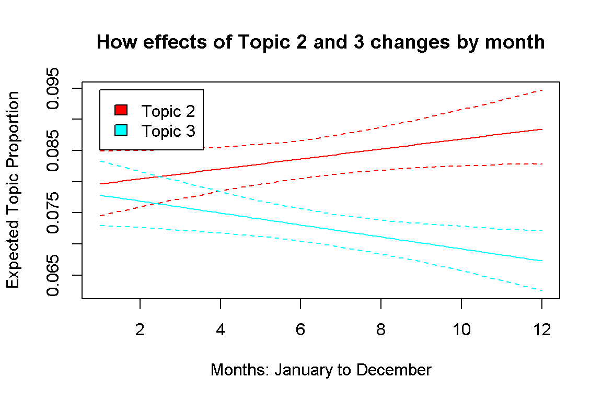

I completed Module 5 of my course, which was about Text Classification and Topic Modeling. I wanted to get some practice with what I learnt in class, as well as explore more about the quanteda package.
It’s been a while since I updated this blog. And I must admit, the previous article featuring what I did for my first Kaggle competition was a “half-hearted” effort at best.
I completed Module 5 of my coursework at SMU, where we learnt about Text Classification and Topic Modeling. As usual, there was so much to learn over the 4 sessions and so much information to process. However, of late, I’ve had this nagging feeling that I’m only scratching the surface in terms of knowledge - the more I learn, the less I know - what a strange way to feel.
So, I decided to supplement my knowledge by learning more about stm and quanteda. As part of Module 5, we had to complete a group assignment. I shall replicate solutions to one of those questions using lda, stm and quanteda.
Now imagine you work as a data scientist for a hotel chain. You receive a dataset from hotels in the US. Your job is to identify the major discussion pointers in customer reviews of the hotel. Find a reliable and valid set of topics, based on prevalence and coherence metrics.
That was Question 3 of the group assignment. Now let’s begin by importing the necessary packages and dependencies.
rm(list = ls())
pacman::p_load(tidyverse, stringi,# tidy DS
skimr, Hmisc, broom, modelr, # EDA 1
scales, ggthemes, gridExtra, # ggplot2::
DT, # for interactive data display
doParallel,
tidytext, textrecipes, lubridate, tokenizers, textmineR,
stm, igraph, stmCorrViz, huge,
quanteda, readtext, spacyr, seededlda)
load("hotel_reviews.Rdata")Let’s begin by importing our text data.
df <- read_csv("hotel_reviews.csv")The dataset consists of 12293 customer reviews, with 2 columns: date and review. Let’s proceed by working on the text using Latent Dirichlet Allocation (LDA). I will use the tidymodels framework for “cleaning” and tokenizing the review data.
I will use the tidymodels framework for “cleaning” the text. Let’s start by removing stopword and punctuation. In step_tokenize punctuation and lowercase conversions are default. But for good practice, I will specify them anyway.
text_lda <-
recipe(formula = ~.,
data = df) %>%
step_tokenize(review,
options = list(strip_punct = TRUE,
lowercase = TRUE),
token = "words" # this is the default
) %>%
step_stopwords(review)Let’s take a look at the output.
output_text_lda<-
text_lda %>% prep() %>% juice()
output_text_lda# A tibble: 12,293 × 2
date review
<fct> <tknlist>
1 2-Aug-18 [34 tokens]
2 27-May-18 [117 tokens]
3 2-Aug-18 [28 tokens]
4 2-Aug-18 [66 tokens]
5 2-Aug-18 [84 tokens]
6 2-Aug-18 [52 tokens]
7 1-Aug-18 [26 tokens]
8 1-Aug-18 [127 tokens]
9 1-Aug-18 [41 tokens]
10 1-Aug-18 [365 tokens]
# ℹ 12,283 more rowsWe see that “document” or review 1 has 34 tokens, while document 2 has 117 tokens. Let’s compare the actual review to the tokenized output for document 3.
df$review[3];text_lda %>% prep() %>% juice() %>% .[3,2] %>% unlist()[1] "Awesome place, attentive and friendly staff, stunning views. Plenty of choices for food, reasonable to expensive but it is Hawaii and nothing is cheap. Close to many local attractions. Very kid friendly and offers a retreat for parents looking for so.e quiet time." review.tokens1 review.tokens2 review.tokens3 review.tokens4
"awesome" "place" "attentive" "friendly"
review.tokens5 review.tokens6 review.tokens7 review.tokens8
"staff" "stunning" "views" "plenty"
review.tokens9 review.tokens10 review.tokens11 review.tokens12
"choices" "food" "reasonable" "expensive"
review.tokens13 review.tokens14 review.tokens15 review.tokens16
"hawaii" "nothing" "cheap" "close"
review.tokens17 review.tokens18 review.tokens19 review.tokens20
"many" "local" "attractions" "kid"
review.tokens21 review.tokens22 review.tokens23 review.tokens24
"friendly" "offers" "retreat" "parents"
review.tokens25 review.tokens26 review.tokens27 review.tokens28
"looking" "so.e" "quiet" "time" We see that stopword such as “and”, “is” as well as punctuations such as “.” and “,” have been removed. Notice that token#26 “so.e” is likely a spelling mistake; its probably meant to be “some”.
Let’s combine the tokens back into sentences without stopword and punctuation, before passing it to CreateDtm from the textmineR package.
text_lda<-
text_lda %>%
step_untokenize(review) %>%
prep() %>%
juice() %>%
rowid_to_column("id")
text_lda %>% print(n=5)# A tibble: 12,293 × 3
id date review
<int> <fct> <fct>
1 1 2-Aug-18 stayed 7 nights 3 year old son decor hotel little o…
2 2 27-May-18 stayed ali tower nice stay proximity beach great pr…
3 3 2-Aug-18 awesome place attentive friendly staff stunning vie…
4 4 2-Aug-18 made reservation december celebrate 50th wedding an…
5 5 2-Aug-18 arrived hotel 4 30pm local time hundreds people che…
# ℹ 12,288 more rowsNow, we have reviews without stopword and punctuation. CreateDtm is a function within the textmineR package that creates a document term matrix from a character vector. Let’s create a document term matrix for our reviews.
Let’s fit and LDA model using FitLdaModel from the textmineR package. Let’s choose 10 topics to start with.
doParallel::registerDoParallel()
set.seed(240511)
lda_model <-
FitLdaModel(dtm = lda_dtm,
k = 10, # the number of topics
iterations = 1000, # number of iterations
calc_r2 = T, # goodness of fit(r square)
beta = 0.05,
alpha = 0.10,
optimize_alpha = T,
# print performance metrics
calc_coherence = T,
calc_likelihood = T,
burnin = 200
)The lda_model took about 60 minutes to train. That’s slow! Let’s take a look at the top 10 terms for each topic. phi denotes word(term) distribution for each topic.
lda_model$top10_terms <-
GetTopTerms(phi = lda_model$phi, M = 10)
lda_model$top10_terms t_1 t_2 t_3 t_4 t_5
[1,] "check" "food" "great" "room" "room"
[2,] "line" "beach" "staff" "us" "resort"
[3,] "get" "day" "stay" "hotel" "day"
[4,] "long" "also" "hilton" "told" "fee"
[5,] "room" "breakfast" "hotel" "desk" "per"
[6,] "people" "get" "resort" "asked" "resort_fee"
[7,] "one" "good" "village" "went" "charge"
[8,] "wait" "go" "hawaiian" "got" "pay"
[9,] "t" "can" "beautiful" "said" "hotel"
[10,] "minutes" "bar" "friendly" "back" "free"
t_6 t_7 t_8 t_9
[1,] "beach" "hilton" "pool" "hotel"
[2,] "hotel" "hawaiian" "tower" "place"
[3,] "waikiki" "property" "ali" "like"
[4,] "restaurants" "village" "i" "people"
[5,] "resort" "stay" "ali_i" "nice"
[6,] "great" "hawaiian_village" "i_tower" "just"
[7,] "shopping" "time" "kids" "beach"
[8,] "walk" "hilton_hawaiian" "area" "good"
[9,] "shops" "one" "pools" "resort"
[10,] "pools" "years" "water" "really"
t_10
[1,] "room"
[2,] "view"
[3,] "tower"
[4,] "ocean"
[5,] "rainbow"
[6,] "rainbow_tower"
[7,] "floor"
[8,] "ocean_view"
[9,] "stayed"
[10,] "diamond" We can also take a look at theta, which gives you an understanding of the topic distribution for each document.
lda_model$theta %>% head() t_1 t_2 t_3 t_4 t_5
1 0.001666667 0.0016666667 0.2683333333 0.0016666667 0.0183333333
2 0.021794872 0.0132478632 0.0816239316 0.0004273504 0.0004273504
3 0.001785714 0.0196428571 0.4839285714 0.0017857143 0.0017857143
4 0.086046512 0.0007751938 0.0007751938 0.6829457364 0.0317829457
5 0.344171779 0.0006134969 0.0006134969 0.0128834356 0.2521472393
6 0.555454545 0.1645454545 0.0009090909 0.1463636364 0.0009090909
t_6 t_7 t_8 t_9 t_10
1 0.4016666667 0.0016666667 0.1350000000 0.1016666667 0.0683333333
2 0.3209401709 0.0004273504 0.3465811966 0.1756410256 0.0388888889
3 0.4303571429 0.0017857143 0.0017857143 0.0553571429 0.0017857143
4 0.0007751938 0.1945736434 0.0007751938 0.0007751938 0.0007751938
5 0.1601226994 0.0006134969 0.0006134969 0.0558282209 0.1723926380
6 0.0009090909 0.1190909091 0.0009090909 0.0100000000 0.0009090909If we take a Colsum along each topic, we can get an understanding of the distribution of each topic across all documents. ie: prevalence
t_1 t_2 t_3 t_4 t_5 t_6 t_7
5.982809 7.455445 18.512571 7.272022 7.210894 16.891251 6.428908
t_8 t_9 t_10
6.538578 11.377837 12.329684 We can use ggplot to take a look at this distribution.
lda_model$prevalence %>%
as_tibble() %>%
rowid_to_column() %>%
ggplot(aes(x = as.factor(rowid),
y = value)
) +
geom_col(fill = "deepskyblue")+
geom_text(aes(label = round(value,1)),
size = 3)+
labs(x = "Topics 1 to 10",
y = "Prevalence",
title = "Prevalence by Topic")+
theme_bw()
We can see that topics 3 and 6 are popularly discussed among all reviews. Let’s see the top 10 terms for topic 3 and 6 again.
lda_model$top10_terms[,3];lda_model$top10_terms[,6] [1] "great" "staff" "stay" "hilton" "hotel"
[6] "resort" "village" "hawaiian" "beautiful" "friendly" [1] "beach" "hotel" "waikiki" "restaurants"
[5] "resort" "great" "shopping" "walk"
[9] "shops" "pools" From my guess, the Hilton hotel in Waikiki, Hawaii is a beautiful resort hotel, with great, friendly staff. The guests enjoyed its restaurants, pool, and shopping during their stay.
There is still a lot more that we can explore, but I’m going to leave LDA for now, and process the same text using stm and see what insights we can discover.
The stm package has its own text processor, aptly named textProcessor(). I will make use of it to process the text. Thereafter, let’s examine the output for document 3 again. I will also create a new feature “month” for use as metadata.
# engineer a new feature month_name.
df_stm <-
df %>%
mutate(date = as.Date(date, format = "%d-%b-%y"),
month_name = month(date, label = FALSE))
text_stm <-
stm::textProcessor(documents = df_stm$review,
meta = df_stm,
removestopwords = TRUE,
removepunctuation = TRUE,
removenumbers = TRUE,
ucp = FALSE,
lowercase = TRUE,
stem = TRUE,
wordLengths = c(1,Inf),
sparselevel = 1
) text_stm$documents[[3]] [,1] [,2] [,3] [,4] [,5] [,6] [,7] [,8] [,9] [,10] [,11] [,12]
[1,] 2153 2168 2365 5016 5213 5482 9414 10444 10796 12246 14930 15873
[2,] 1 1 1 1 1 1 1 1 2 1 1 1
[,13] [,14] [,15] [,16] [,17] [,18] [,19] [,20] [,21] [,22]
[1,] 16026 16566 18553 18862 19793 20446 20606 21831 22110 22951
[2,] 1 1 1 1 1 1 1 1 1 1
[,23] [,24] [,25] [,26] [,27]
[1,] 25231 25744 26320 27641 29668
[2,] 1 1 1 1 1Processing the text using textProcessor() resulted in a different type of output. Rather than showing the words in document 3, we get an index reference to a list of vocab, and the number of times that word occurs in the document.
prepped_text_stm <-
prepDocuments(documents = text_stm$documents,
vocab = text_stm$vocab,
meta = text_stm$meta)Next, we proceed to fit the structural topic model using stm().
doParallel::registerDoParallel()
set.seed(240511)
stm_model <-
stm(data = prepped_text_stm$meta,
documents = prepped_text_stm$documents,
vocab = prepped_text_stm$vocab,
K = 10, # choose number of topics = 10
prevalence = ~ month_name,
seed = 240511,
max.em.its = 200,
init.type = "Spectral"
)stm:: has a number of useful functions and plots we can explore. Let’s start with labelTopics.
labelTopics(stm_model, n = 10)Topic 1 Top Words:
Highest Prob: great, stay, hotel, beach, resort, restaur, shop, staff, locat, villag
FREX: friend, great, wonder, perfect, locat, beauti, amaz, everyth, fantast, excel
Lift: poolsour, resortpool, outstandingth, acc, shoppingoveral, dome, honoluluhawaiian, amenitiesw, eatth, elop
Score: great, shop, stay, beach, restaur, villag, staff, locat, love, beauti
Topic 2 Top Words:
Highest Prob: hilton, stay, room, hawaiian, hotel, member, properti, villag, servic, year
FREX: hhonor, member, honor, status, gold, custom, receiv, ago, treat, elit
Lift: misrepresent, segment, spg, againdamag, ali‘, brusqu, calll, card-pleas, committ, deskw
Score: hilton, member, honor, hawaiian, custom, manag, villag, properti, gold, receiv
Topic 3 Top Words:
Highest Prob: walk, shop, store, also, moana, beach, can, ala, waikiki, abc
FREX: moana, ala, flamingo, koi, pond, centr, penguin, mall, parrot, cream
Lift: areait, coffee-mak, conch, eateriesbar, fullest, israel, mt, pendant, ralph, sach
Score: moana, ala, shop, walk, centr, penguin, store, abc, mall, bus
Topic 4 Top Words:
Highest Prob: good, food, breakfast, price, bar, restaur, drink, nice, expens, servic
FREX: buffet, juic, pickl, drink, breakfast, pronto, steak, menu, food, averag
Lift: enjoyif, unappet, sitewould, pricesth, frontdesk, evolv, bedsroom, renter, pre-prepar, deplor
Score: food, good, breakfast, drink, bar, price, buffet, tropic, pizza, restaur
Topic 5 Top Words:
Highest Prob: resort, park, day, fee, get, hotel, car, charg, per, pay
FREX: fee, park, shuttl, car, airport, self, per, valet, charg, wifi
Lift: knowth, passcod, timet, voyag, hawaiistay, ot, odditi, minutescheck, offpick, groundscon
Score: fee, park, charg, car, per, resort, pay, rental, rent, tour
Topic 6 Top Words:
Highest Prob: hotel, like, just, peopl, get, go, place, dont, want, time
FREX: im, your, that, wont, bad, disney, vega, u, ive, theyr
Lift: “come, allerg, bookingscom, conundrum, gasp, hasn’t, mileag, shouldn’t, startour, micro
Score: like, peopl, dont, just, place, hotel, im, your, bad, go
Topic 7 Top Words:
Highest Prob: room, call, desk, one, told, towel, ask, us, check, day
FREX: sheet, fix, mainten, hair, replac, phone, stain, toilet, wall, secur
Lift: explicit, interview, band-aid, deodor, departurei, foolish, hastili, niceti, outright, reconnect
Score: told, call, room, manag, card, towel, ask, desk, phone, said
Topic 8 Top Words:
Highest Prob: room, tower, view, ocean, stay, rainbow, floor, diamond, alii, head
FREX: partial, ocean, view, corner, rainbow, th, renov, alii, floor, balconi
Lift: mix-, odd-numb, mightv, eleventh, noisiest, bathroomw, daystaff, unrenov, mid-august, guestroom
Score: tower, view, room, ocean, rainbow, floor, alii, balconi, diamond, head
Topic 9 Top Words:
Highest Prob: pool, beach, kid, lagoon, water, chair, waikiki, crowd, tower, resort
FREX: paddl, slide, board, sand, surf, kid, wave, lagoon, water, kayak
Lift: great-, shadether, inaround, ph, mana, clean-, makapuu, outther, getawayth, elementari
Score: pool, kid, beach, lagoon, chair, water, paddl, slide, rent, board
Topic 10 Top Words:
Highest Prob: us, check, room, time, arriv, night, day, book, got, didnt
FREX: flight, readi, queue, arriv, us, earli, late, holiday, australia, recept
Lift: timeupon, sone, didn, goodthi, usnot, pesto, thoughy, lewi, peoplecheck, wonderfulhousekeep
Score: us, check, arriv, flight, book, earli, got, readi, hour, wait Four different types of word weightings are printed with labelTopics: Highest Probability, FREX (words that are frequent and exclusive), Lift and Score.
We can also plot a summary of the 10 topics.
plot(stm_model,
type = "summary",
n = 10)
Topic 1 has the highest expected topic proportions, and is somewhat similar to topics identified by LDA. Its highest probability words include: great, stay, hotel, beach, resort, restaur, shop, staff, locat, villag.
By changing type can take on 4 “settings” to see different plots: summary, labels, perspective and hist. Let’s explore all of them.
plot(stm_model,
type = "labels",
n = 5)
type=“labels” plots the top words selected according to the chosen criteria for each selected topics.
type=“perspective” results in something that looks like a wordcloud, but it isnt. Instead, it plots two topic or topic-covariate combinations. Words are sized proportional to their use within the plotted topic-covariate combinations and oriented along the X-axis based on how much they favor one of the two configurations.
type = “hist” plots a histogram of the MAP estimates of the document-topic loadings across all documents. The median is also denoted by a dashed red line.
We can use the function topicCorr to generate a topic correlation matrix. Then, use plot() to visualize. There are 2 estimation procedures for producing correlation matrices: simple and huge. Let’s explore both.
topic_corr_simple <-
topicCorr(stm_model,
method = "simple",
cutoff = 0.01,
verbose = TRUE)
plot(topic_corr_simple)
topic_corr_huge <-
topicCorr(stm_model,
method = "huge",
cutoff = 0.01,
verbose = TRUE)Conducting the nonparanormal (npn) transformation via shrunkun ECDF....done.
Conducting Meinshausen & Buhlmann graph estimation (mb)....done
Conducting rotation information criterion (ric) selection....done
Computing the optimal graph....doneplot(topic_corr_huge)
There is only a slight difference between both plots. That’s likely because we have chosen K=10 for 10 topics. I suspect if we had a greater number of topics, the plots would look different.
On that note, stm also has a searchK function that computes diagnostic properties for a range of user-specified number of topics. We can use plot to “visualize” the “best” number of topics to use.
stm_search_for_k <-
searchK(documents = prepped_text_stm$documents,
vocab = prepped_text_stm$vocab,
K = c(5,10,15,20,25,30,35,40,45,50),
init.type = "Spectral")plot(stm_search_for_k)
It would appear that K=25, or 25 topics is the “best” choice.
Another way of getting stm to “search” for the number of topics is by setting K=0 and init.type = “Spectral”. The document calls this “a more preliminary selection strategy based on work by Lee and Mimno (2014)”. It goes further to emphasize that this is by no means the “true” number of topics.
I have appended the code below for reference, but have not executed it as it is “computationally expensive”.
doParallel::registerDoParallel()
set.seed(240511)
stm_model_chooseK <-
stm(documents = prepped_text_stm$documents,
vocab = prepped_text_stm$vocab,
K = 0, # choose number of topics = 10
seed = 240511,
max.em.its = 200,
init.type = "Spectral"
)stm is particularly useful in estimating a relationship between features found in meta-data and topics. In our example, we did not have many features apart from date. Yet, we can still engineer an additional feature month_name and use the function estimateEffect() to see the relationship between month and topics.
### Main Effects
stm_main_effects <-
estimateEffect(1:10 ~ month_name,
stm_model,
meta = prepped_text_stm$meta,
uncertainty = "Global") # we can plot this
plot(stm_main_effects,
covariate = "month_name",
model = stm_model,
topics = c(2,3),
method = "continuous",
xlab = "Months: January to December",
main = "How effects of Topic 2 and 3 changes by month")
Interesting, the effects of Topic 2 increases as we move from January to December, while the effects of Topic 3 decreases. Let’s see what Topic 2 and 3 are again.
labelTopics(stm_model, n = 10, topics = c(2,3))Topic 2 Top Words:
Highest Prob: hilton, stay, room, hawaiian, hotel, member, properti, villag, servic, year
FREX: hhonor, member, honor, status, gold, custom, receiv, ago, treat, elit
Lift: misrepresent, segment, spg, againdamag, ali‘, brusqu, calll, card-pleas, committ, deskw
Score: hilton, member, honor, hawaiian, custom, manag, villag, properti, gold, receiv
Topic 3 Top Words:
Highest Prob: walk, shop, store, also, moana, beach, can, ala, waikiki, abc
FREX: moana, ala, flamingo, koi, pond, centr, penguin, mall, parrot, cream
Lift: areait, coffee-mak, conch, eateriesbar, fullest, israel, mt, pendant, ralph, sach
Score: moana, ala, shop, walk, centr, penguin, store, abc, mall, bus What’s your interpretation? stm:: is an extensive package with lots more to explore. But, we need to move on to quanteda. If you need more information on stm:: visit this link.
We did not learn about quanteda in Module 5. There is an excellent tutorial which I am using to learn about the functionalities of the package. There is so much to unpack - I think I will need to write up another blog post about quanteda.
quanteda has a simple and powerful companion package for loading texts: readtext. Let’s make use of it.
df_quanteda <-readtext::readtext("hotel_reviews.csv")Wow, it even created a doc_id for each document. Nicely done. However, I notice some errors. For example “’” is being replaced by “019”. I’m not sure what other errors exist. Perhaps I shall just make use of read_csv for now?
df_quanteda <-
df %>%
mutate(date = as.Date(date, format = "%d-%b-%y"),
month_name = month(date, label = FALSE))Next, I will use corpus() to build a corpus of text. Covariates, such as date and month, can be added using docvars(). quanteda calls these document variables.
text_quanteda <-corpus(df_quanteda$review)
docvars(text_quanteda, "date") <- df_quanteda$date
docvars(text_quanteda, "month_name") <- df_quanteda$month_nameLet’s take a look at a summary() of text_quanteda.
Corpus consisting of 12293 documents, showing 10 documents:
Text Types Tokens Sentences date month_name
text1 51 66 7 2018-08-02 8
text2 128 267 18 2018-05-27 5
text3 38 50 4 2018-08-02 8
text4 100 137 5 2018-08-02 8
text5 125 212 9 2018-08-02 8
text6 78 114 11 2018-08-02 8
text7 41 53 1 2018-08-01 8
text8 169 288 12 2018-08-01 8
text9 68 90 5 2018-08-01 8
text10 376 774 42 2018-08-01 8That’s pretty cool. Not to mention FAST! Using the corpus function, we already have some preliminary information on the number of tokens and sentences from each document. Perhaps we would like to find the “most wordy” review. Or the least wordy review. Can that be done? Yes!
token_info <-
text_quanteda %>%
summary() %>%
as_tibble()token_info[which.max(token_info$Tokens),] # document or review 82 is the most wordy# A tibble: 1 × 6
Text Types Tokens Sentences date month_name
<chr> <int> <int> <int> <date> <dbl>
1 text82 428 971 33 2018-07-15 7token_info[which.min(token_info$Tokens),] # document or review 28 is the least wordy# A tibble: 1 × 6
Text Types Tokens Sentences date month_name
<chr> <int> <int> <int> <date> <dbl>
1 text28 31 33 1 2018-07-24 7Perhaps we only want to take a look at documents in February.
text_quanteda %>%
corpus_subset(month_name == 2) %>%
summary(n=10)Corpus consisting of 876 documents, showing 10 documents:
Text Types Tokens Sentences date month_name
text614 178 301 7 2018-02-28 2
text615 149 249 19 2018-02-27 2
text616 41 56 3 2018-02-27 2
text617 111 166 10 2018-02-26 2
text618 40 48 1 2018-02-26 2
text619 124 188 10 2018-02-26 2
text620 144 262 12 2018-02-25 2
text621 187 343 21 2018-02-25 2
text622 330 817 34 2018-02-24 2
text623 98 165 6 2018-02-23 2There are many more corpus_* related functions to explore. But for now, let’s move on to the next step of tokenizing the text. For that, we can use the function tokens().
tokens_quanteda <-
text_quanteda %>%
tokens(
what = "word",
remove_punct = TRUE,
remove_numbers = TRUE,
remove_separators = TRUE,
verbose = TRUE
)Next, we can remove stopwords using tokens_remove() function. Thereafter, let’s take a look at document 3.
tokens_quanteda_no_stopwords <-
tokens_remove(tokens_quanteda, stopwords("english"))tokens_quanteda_no_stopwords[3]Tokens consisting of 1 document and 2 docvars.
text3 :
[1] "Awesome" "place" "attentive" "friendly" "staff"
[6] "stunning" "views" "Plenty" "choices" "food"
[11] "reasonable" "expensive"
[ ... and 16 more ]quanteda has many more functions to explore. For example, kwic() allows you to search for keywords and see what context they are being used. Let’s do a search for “food” and “expensive”
kwic(tokens_quanteda_no_stopwords,
pattern = "food") %>%
head()Keyword-in-context with 6 matches.
[text3, 10] staff stunning views Plenty choices | food |
[text28, 16] York diner Italian restaurant.Good quality | food |
[text29, 45] need take cab stayed timeshare | Food |
[text35, 104] relatively reasonable cost spa services | Food |
[text35, 167] you’ll see there’s much around | food |
[text40, 12] great hotel beach close center.The | food |
reasonable expensive Hawaii nothing cheap
reasonable prices.The fireworks display missed
prices double triple mainland crowded
suite kitchen just snacks wasn’t
entertainment activities it’ll seem like
good.We return sure just loved kwic(tokens_quanteda_no_stopwords,
pattern = "expensive") %>%
head()Keyword-in-context with 6 matches.
[text3, 12] views Plenty choices food reasonable |
[text5, 74] staff friendly.As expected hotel restaurants |
[text11, 8] just ok rooms basic quite |
[text25, 42] away Price vs Quality show |
[text27, 23] crowds head away main beach.Can |
[text29, 34] shops restaurants Car rental parking |
expensive | Hawaii nothing cheap Close many
expensive | nice Starbucks property easy walk
expensive | get family great time Also
expensive | compared Polynesian Cultural center Cost
expensive | location everything
expensive | can walk grocery stores otherwise You can also search by phrases. Let’s try “expensive food”.
kwic(tokens_quanteda_no_stopwords,
pattern = phrase("expensive food"),
window = 5) %>%
head()Keyword-in-context with 6 matches.
[text49, 48:49] dinner restaurants typical Hawaii resort |
[text280, 79:80] towers pools always busy restaurants |
[text511, 1:2] |
[text1098, 41:42] meant waiting line everything everything |
[text1180, 42:43] high rise towers much day |
[text1218, 68:69] day disappointing dinning establishments site |
expensive food | drinks good We’re hotel shopping
expensive food | mediocre room next stage live
Expensive food | great service great check process
expensive food | self parking $ night check
Expensive food | $ hire kayak hour walk
expensive food | provided group charged large groupLastly, you can use token_ngrams() to generate “ngrams”.
tokens_quanteda_ngrams <-
tokens_ngrams(tokens_quanteda_no_stopwords, n = c(1:3))
head(tokens_quanteda_ngrams[[3]], 10) [1] "Awesome" "place" "attentive" "friendly" "staff"
[6] "stunning" "views" "Plenty" "choices" "food" Within quanteda, what we commonly reference as a document term matrix is called a document feature matrix. Quite aptly, the function dfm() is used to generate a document feature matrix from a tokens object.
quanteda_dfm <-
dfm(tokens_quanteda_no_stopwords,
tolower = TRUE,
verbose = TRUE)Wow, that was blazing fast. It was done in 0.26 seconds. We can use topfeatures to examine the top features.
topfeatures(quanteda_dfm, n=10) room hotel beach tower resort great hilton stay one view
16478 13301 12034 10737 10576 9264 8237 7703 6718 6706 “Room” is a top feature with 16,478 occurrences. What if we wanted to know how in how many documents does it occur?
topfeatures(quanteda_dfm, n=10, scheme = "docfreq") room beach hotel tower great stay resort hilton stayed view
7138 6680 6440 6091 5544 5215 5197 4918 4891 4425 As quanteda doesn’t implement LDA, we need to install the seededlda:: package to implement LDA.
quanteda_lda_model <-
textmodel_lda(quanteda_dfm, k = 10, verbose = TRUE, max_iter = 1000)You can use terms() to extract the top terms for each topic.
terms(quanteda_lda_model, n =10) topic1 topic2 topic3 topic4 topic5 topic6
[1,] "beach" "pool" "room" "food" "tower" "$"
[2,] "hotel" "kids" "us" "breakfast" "room" "resort"
[3,] "restaurants" "people" "check" "good" "view" "day"
[4,] "waikiki" "beach" "hotel" "bar" "ocean" "per"
[5,] "resort" "nice" "desk" "great" "rainbow" "fee"
[6,] "shopping" "place" "told" "restaurant" "stayed" "parking"
[7,] "great" "pools" "time" "also" "pool" "room"
[8,] "shops" "just" "get" "tropics" "floor" "get"
[9,] "walk" "hotel" "one" "$" "stay" "pay"
[10,] "pools" "resort" "front" "abc" "diamond" "free"
topic7 topic8 topic9 topic10
[1,] "hilton" "great" "room" "beach"
[2,] "hotel" "staff" "tower" "hotel"
[3,] "like" "stay" "one" "lagoon"
[4,] "stay" "hilton" "bed" "can"
[5,] "property" "hotel" "bathroom" "see"
[6,] "hawaiian" "village" "beds" "go"
[7,] "village" "resort" "floor" "also"
[8,] "just" "beautiful" "night" "one"
[9,] "one" "friendly" "door" "car"
[10,] "time" "hawaiian" "two" "island"The function topic() allows you to see the likelihood that each document “talks about” which topic. For exmaple, document or text1 most likely “talks about” topic1.
topics(quanteda_lda_model) %>% head(20) text1 text2 text3 text4 text5 text6 text7 text8 text9 text10
topic1 topic2 topic1 topic3 topic9 topic2 topic8 topic7 topic7 topic2
text11 text12 text13 text14 text15 text16 text17 text18 text19 text20
topic2 topic1 topic8 topic2 topic1 topic3 topic5 topic7 topic2 topic8
10 Levels: topic1 topic2 topic3 topic4 topic5 topic6 ... topic10quanteda is also able to perform naive bayes classification and regression classification. However, the data that we have is not suitable for this purpose.
Wow, that was a very very long post. quanteda is quite interesting. I think I’m going to look for a dataset where I can use it to make some predictions. It is also able to perform sentiment analysis - perhaps use to to analyze my Whatsapp messages. That would be kinda cool.
Thanks for reading!
#save.image("hotel_reviews.RData")